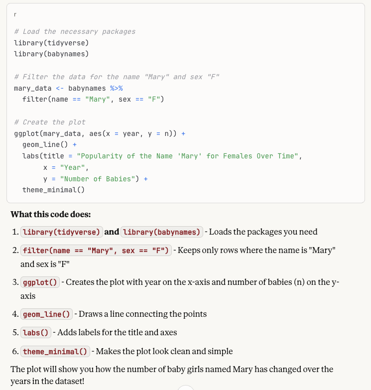
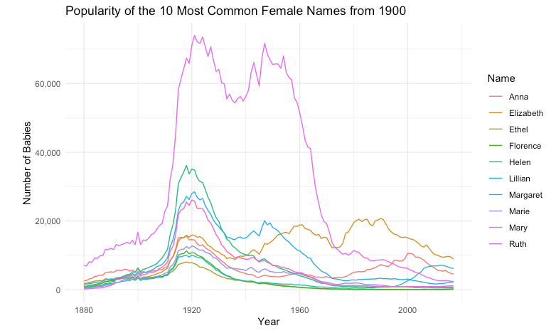
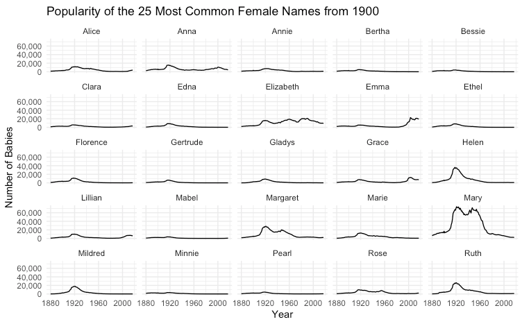

Why scientists should vibe code
What I mean by “vibe coding” here is telling an AI tool what you want to create with code, and letting it write most or all of the code for you. It has advantages and pitfalls. My argument here is that it can be a valuable activity for scientists to try, especially for data visualization.
Most scientists have software they use to graph data. While this can be a useful tool, I frequently see scientists present and explore their data in sub-optimal ways because they’re constrained by what they can easily do with their software. People who can make graphs with code have a lot more flexibility, and with experience can generate many possible visualizations of the same data to find the best approach. This is typically an iterative process, and works best when programmtic graphing skills and deep understanding of the data at hand are both represented. In the past this has often meant that two people need to collaborate, which is more cumbersome and hence less likely to happen. Modern AI tools, however, can put this capability in the hands of the scientist who collected the data.
I did a lunch-and-learn session about how to do this for a group of scientists that I work with at EvE Bio. One of them took it to heart, downloaded R and RStudio and, in a few hours on his own with Claude, generated a complex visualization of our dataset that he had always wanted to have. He was then able to re-run this code on future versions of this dataset.
What this means in practice
What I’m proposing is this:
- A scientist describes their well-organized dataset and a graph they want to make to an AI tool like Claude or ChatGPT (I’ll assume Claude here)
- Claude generates code to make the graph
- The scientist runs the code on their local computer and inspects the output
- There is a series of back-and-forth followups to try different things, until a satisfying end result is reached
- The scientist double-checks key results for accuracy
What we’re not doing here is giving Claude the dataset, asking it to do an analysis for us, or letting Claude modify code directly on our computer (all of these things are possible, but not necessary).
An example
It’s helpful to see how this works in detail. I’m going to use the babynames dataset, which comes from the social security administration and is easily accessible in R from the babynames package. (For data generated in the lab, there would typically be a file (csv, etc.) of data that you would want to read in with code, and you can ask Claude how to do that (something like this: data <- read_csv('data/my_data.csv')).)
I started with this prompt to Claude:
I am using R and the tidyverse package, but I don’t have experience coding with R. I want to use the dataset from the babynames package. It is called babynames and has columns year, sex, name, n, and prop. Values of the sex column are M or F. I want to make a plot of the babies with each name over time. Let’s start with the name Mary for females. How do I use R to plot this over time?
Claude responded with this code, and an explanation of what it does. The explanation is helpful both for learning and to check that what Claude is doing is what you want.

The next step is to copy this chunk of code into a file (like babynames.R) in RStudio (the easiest place to run R code). Run this code, and you get a plot like this:

Since that looks good, I took the next step with this prompt:
I like that plot. I’d like the y axis labels to have commas in the numbers. And now I’d like to select the 10 most common female names in the year 1900 and plot each of them so I can see how they compare.
When I copy and run the updated code, I get a plot like this:

And then with another prompt:
Let’s extend that to 25 names and plot them each in their own subgraph.
Resulting in this:

This process of back and forth can go on as long as necessary as you explore and develop the end result.
Challenges
There are two main challenges to get this working: 1) Getting the setup and basic mechanics of running code in place and 2) Getting your data in a good format to use with code.
If you have a programmer you can ask about getting started, that makes things easier. If not, this is another place where asking Claude can be helpful.
For data organization, there are two things to tackle. First you need to understand what type of format to aim for, and then you need to know how to get your data into that format easily. If you have a small dataset, this may be easy to do by hand, but for other cases, you can also have Claude help generate code to rearrange and combine your data (but this requires checking the results carefully). The organization that works well for programming with data follows “tidy data” principles. In short, each column should be a variable, each row should be an observation, and each cell should have one value. If you’re using a spreadsheet, things will be much easier if your data starts in cell A1 and there is a single row at the top with a name for each column.
Keys to Success
- Use AI for things where you can check the results quickly and reliably (like data visualization)
- Do one step at a time, iteratively
- Provide context and describe what you want
- Ask Claude how you can check things
- Read the explanations of what it’s doing
- If you get an error when running code, send it to Claude for troubleshooting
- Be persistent; doing this well takes some practice